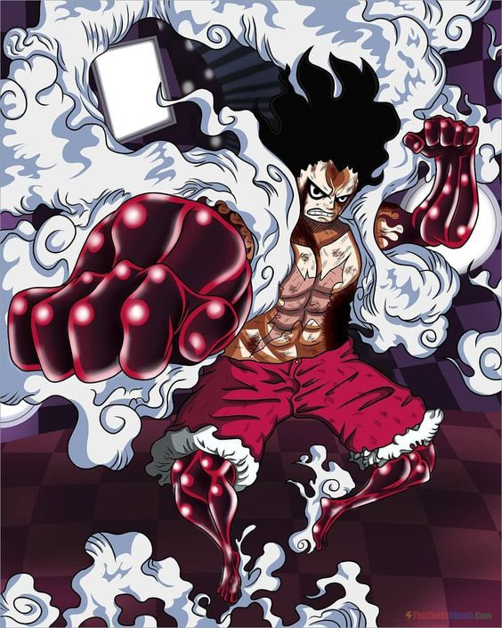

Poderes
Gear 2

Esta técnica envolve Luffy acelerar o fluxo do sangue em todas as partes do corpo ou selecionados, a fim de lhes fornecer mais oxigênio e nutrientes, tornando-o muito mais rápido e mais forte. A técnica utiliza ainda mais oxigênio e energia, utilizando-se de mais alimentos o que faz Luffy ofegar pesadamente.
Gear 3

O Gear 3 é uma habilidade onde Luffy infla seus ossos aumentando o tamanho de partes do seu corpo. Na maior parte das vezes ele utiliza para aumentar seu braço para um grande golpe. O lado negativo desse Gear é que, após utilizá-lo, o personagem se torna uma criança por um breve momento.
Gear 4 bound-man

Com o Gear 4 Luffy reveste seus braços com o Haki do Armamento e depois infla seus músculos. A Boundman reduz o tamanho de suas pernas para aumentar seus braços realizando golpes devastadores.
Gear 4 tank-man

Enquanto as outras formas do Gear Fourth foram usadas constantemente, Luffy usou o Tankman apenas na luta contra Charlotte Cracker. Logo após comer vários biscoitos, Luffy usou o seu corpo com o estômago cheio para virar o Tankman, que é uma versão mais recheada do Gear Four padrão.
Gear 4 snake-man
Em contraste com as duas formas anteriores, Luffy não se expande exageradamente ao usar o Snake-Man, embora seu torso e membros ainda fiquem maiores. A mudança mais proeminente nesta forma são os braços de Luffy. Em vez de fechar a mão em punho, ele forma um punho de leopardo ao flexionar a primeira junta da mão. Snake-Man parece ser uma forma focada no ataque, permitindo que Luffy atinja oponentes ágeis. Ao usar Python nesta versão, Luffy pode alterar a direção de seu ataque de maneiras inesperadas.
Gear 5

De acordo com a saga, a Gomu Gomu no Mi é o nome pelo qual todos chamam a fruta de Luffy, mas seu verdadeiro nome é Hito Hito no Mi: Nika. É uma fruta mítica de Zoan, e dizem que ela tem uma mente própria. A fruta escapou do Governo por séculos, e ninguém a despertou em 800 anos. Isso tudo mudou quando Luffy se aproveitou de seu verdadeiro poder, e a fruta o presenteou com uma força selvagem. Dizem, também, que a Hito Hito no Mi concede poder ilimitado, restrito apenas pela imaginação de seu usuário. Para Luffy, seu corpo ainda mantém sua natureza emborrachada e força aprimorada, mas agora ele também pode fazer isso com outras coisas. O Gear 5 de Luffy em One Piece também o transforma para um visual muito “caricatural”, e ele ainda consegue usar outras técnicas de Gear. Por exemplo: Luffy usa a inflação de membros durante sua batalha com Kaido depois de despertar sua fruta, e neste momento, seu batimento cardíaco rítmico mantém seu espírito alto enquanto luta. Quanto à sua aparência física, o Gear 5 não muda muito o físico do pirata. No entanto, Luffy ganha cabelos de fogo e grandes olhos dourados. Suas roupas também ficam cheias de fumaça quando ele entra neste estado. Luffy também age de forma mais infantil do que o normal quando está em Gear 5, e o mangá continua sugerindo que o pirata incorpora totalmente a liberdade enquanto ele usa o poder.
Haki do rei

Esse tipo de Haki permite que o usuário exerça sua força de vontade sobre os outros. Dizem que quem possui esse tipo de Haki tem as qualidades de um rei. O Haoshoku Haki é considerado uma ameaça extremamente perigosa e um ativo altamente valioso por grupos poderosos como os Almirantes da Marinha e os Yonkou.
Haki do rei avançado

O Haki do Rei Avançado permite que o usuário exerça um controle mais preciso e poderoso sobre os outros. Isso inclui a capacidade de dominar seres vivos mais fortes e resistentes à influência do Haki do Rei. Um exemplo, é o luffy usando contra kaido das 100 feras a criatura mais forte de todas, como podem ver na imagem a cima.